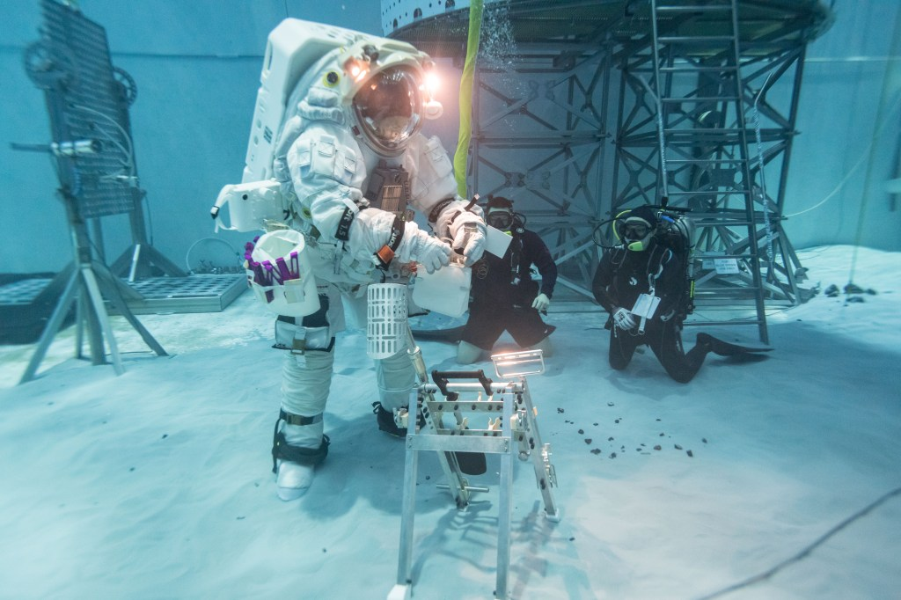

Una tuta lunare è un veicolo individuale. Mantiene un ambiente respirabile, gestisce calore e risorse e permette alla persona di muoversi in condizioni che il corpo non può affrontare da solo. La qualità di una passeggiata dipende da questa macchina quanto dal lander che ha portato l’astronauta.
Non è la tuta del viaggio in Orion
La tuta indossata durante lancio e rientro ha un ruolo diverso da quella usata sulla superficie. Non tutte le immagini di un astronauta vestito per lo spazio rappresentano lo stesso apparato. Il colore o l’aspetto esterno non identificano da soli la capacità operativa.
AxEMU, sviluppata da Axiom Space per le attività lunari, deve convivere con movimenti, pressioni e un lavoro fisico. La persona deve poter camminare, piegarsi, usare strumenti e rispondere a un imprevisto. Protezione e mobilità devono essere verificate insieme.

La pressione rende difficile il movimento
Dentro la tuta esiste una differenza di pressione rispetto all’esterno. Le giunzioni devono consentire movimento senza perdere protezione. Un gesto banale senza tuta può richiedere fatica e tempo quando si lavora dentro un sistema pressurizzato.
NASA descrive prove con livelli di pressione e operazioni simulate. La piscina aiuta a studiare parti del lavoro, ma non è la superficie lunare completa: terreno, polvere e ambiente termico richiedono altre verifiche. Nessuna singola prova riproduce tutto.
La tuta deve fare tre cose insieme
La polvere entra nella storia
La regolite può depositarsi su superfici, apparati e giunzioni. Portarla dentro un ambiente abitato crea un problema diverso dal vederla su uno stivale. Pulizia, manutenzione e percorsi di ingresso devono essere pensati come operazioni della missione.
Una presenza prolungata moltiplica l’uso degli stessi apparati. La tuta deve mantenere prestazioni attraverso cicli e interventi compatibili con le risorse locali. Essere adatta a una dimostrazione non significa essere già pronta per un servizio ripetuto.
I ritardi non sono un dettaglio di abbigliamento
Il rapporto OIG del 2026 giudica troppo ottimistiche le scadenze iniziali delle nuove tute e segnala ritardi che possono influire sulle missioni. La disponibilità del trasporto non risolve questa dipendenza. Per scendere e lavorare servono entrambi.
Una valutazione del rischio può essere aggiornata dopo nuove prove. Il libro non trasforma una previsione di ritardo in una data certa, ma conserva il motivo per cui l’apparato deve entrare nel bilancio del programma.
La persona è dentro il progetto
Adattabilità e differenze fisiche dell’equipaggio richiedono attenzione. Un sistema umano deve permettere a persone diverse di operare con sicurezza, non soltanto a un modello teorico di astronauta. Il lavoro di prova deve ascoltare anche ciò che la persona riesce realmente a fare.
La futura fotografia di un astronauta sulla Luna dipenderà da questa parte del programma. Una tuta efficace rende possibile non soltanto arrivare, ma raccogliere informazioni e tornare al lander nelle condizioni previste.
Fonti pubbliche e tracce
- NASA, prove AxEMU, 12 febbraio 2026. Prove di mobilità e pressioni, non tuta già usata sulla Luna.
- NASA OIG, ritardi delle tute, aprile 2026. Valutazione indipendente NASA OIG su calendario e rischi.
- NASA, Artemis II: Image and Video Recap. Fotografie documentarie: crediti distinti per ciascuna immagine.